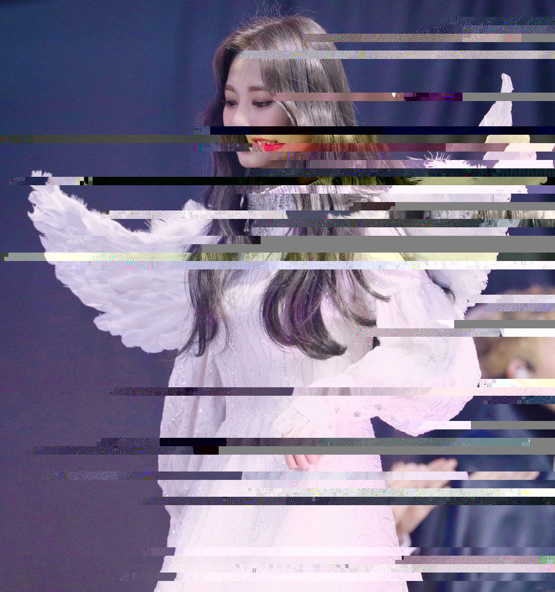
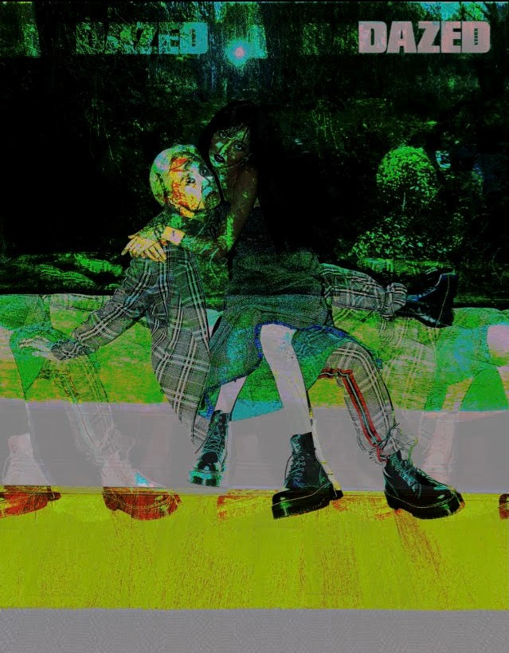

Glitch Art- Showing the Corruption of the K-Pop Industry.
Angel Glitch
For my first image I used a picture of kpop idol Tzuyu from Twice. I used text edit to glitch the photo. I wanted to comment on how exalted idols are in South Korea. The expectations fans hold against them are so unreasonably high that they are almost deified. I chose this picture of Tzuyu wearing an angel costume to represent that. If they make one simple mistake, it could cost them their career. Even after apologizing, many idols are not forgiven for their mistakes and are held accountable for years.
Loss of Childhood
Another toxic part about the idol industry is how they recruit children to become idols. This is concerning because kpop idols are often overworked, forced to do unhealthy diets, sexualized, and don't have privacy. K-pop trainees also have to work strenuous hours in preparation for their debut. For this picture I used a kpop group known as NCT Dream as an example, and used audacity to glitch the photo. The oldest member was 16 when they debuted. I like how the glitch kind of blurs their face and hides their identities. In a way, once people become idols they have to hide parts of their true personality in order to keep their reputation clean.

No Dating
The final topic I wanted to talk about is dating being prohibited by many companies in the kpop industry. Most idols are not allowed to date despite being adults. One of the reasons why is because fans can become super possessive of idols and will cancel them if they start dating someone. Even dating scandals with no evidence can cause an uproar and hurt an idols reputation. For this photo I used famous kpop couple Hyuna and Dawn. They were let go from their original company after they confirmed they were dating. I used Audacity to glitch this photo.
